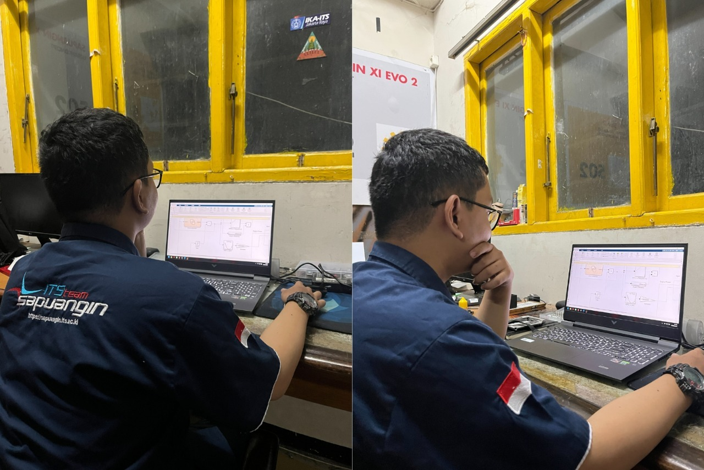
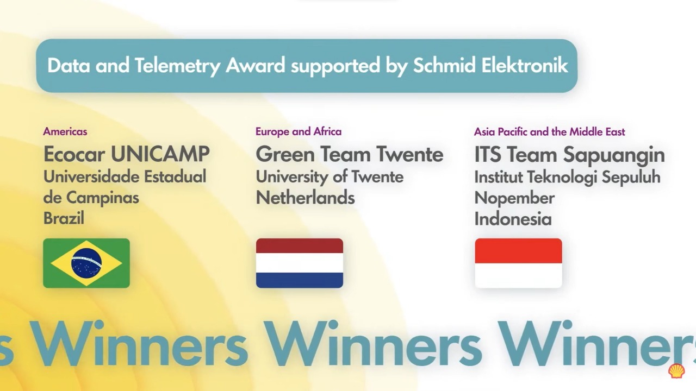

Oleh : adminwebits | 410 | Source : its.ac.id
Tim Sapuangin ITS yang mengikuti kompetisi Shell Eco-Marathon 2022 Virtual Off-Track Awards 2022: Data and Telemetry
Kampus ITS, ITS News – Tim Sapuangin Institut Teknologi Sepuluh Nopember (ITS) kembali menorehkan namanya di kancah internasional. Salah satu tim mobil hemat energi kebanggaan ITS ini berhasil menjuarai Shell Eco Marathon (SEM) Virtual Programme 2022 pada sublomba Virtual Off-Track Awards: Data and Telemetry Award di regional Asia Pasifik dan Timur Tengah yang diumumkan secara daring, Rabu (31/8) malam.
General Manager Sapuangin ITS William Mikhael Parlindungan menjelaskan, sublomba jenis ini menantang peserta untuk membuat inovasi menggunakan Science, Technology, Engineering, dan Math untuk meningkatkan konsistensi driver ketika membelokkan mobil dan menekan pedal gas. Hal ini dilakukan untuk mendapatkan hasil yang optimal pada penggunaan bahan bakar melalui ide yang dinamai Race Start Mode.

Tim Sapuangin ITS ketika melakukan simulasi secara daring untuk sistem Start Race Mode yang terdiri dari Automatic Pedal dan Automatic Gear Shift
Dikerjakan selama sebulan, ide besar ini terdiri atas dua ide yang didasari dari masukkan data performa mobil yakni Automatic Gear Shift dan Automatic Pedal. Pada Automatic Gear Shift, sistem ini bertujuan untuk menjaga putaran mesin yang optimal untuk menghemat penggunaan bahan bakar. “Sistem ini akan secara otomatis memindahkan gigi ketika putaran mesin melebihi batas putaran yang ditentukan tiap gigi,” jelasnya.
Sedangkan, untuk Automatic Pedal sendiri dicetuskan karena pengeluaran bahan bakar yang berlebih akibat inkonsistensi driver ketika starter dan berkendara. Lewat sistem ini, pembatasan pada pedal gas akan diberikan untuk mencegah penggunaan bahan bakar berlebih akibat menekan pedal gas yang terlalu besar. “Pedal gas akan secara otomatis tertahan bila melebihi kebutuhan dari mesin mobil saat beroperasi,” bebernya.
Tak hanya gagasan, William melanjutkan, perhitungan melalui software Matlab turut disertakan pada inovasi-inovasi yang dibuat oleh tim yang dibimbing oleh Ir Witantyo MEng Sc tersebut. Simulasi ini bertujuan untuk menciptakan hasil yang memungkinkan inovasi ini dapat direalisasikan nantinya. “Untuk mendapatkan hasil senyata mungkin, simulasi dilakukan agar menunjukkan bahwa ide kami sangat mungkin untuk diaplikasikan,” tambahnya.

Tim Sapuangin ITS berhasil menjadi juara Shell Eco-Marathon Virtual Off-Track Awards 2022: Data and Telemetry Award pada regional Asia Pasifik dan Timur Tengah
Mahasiswa Departemen Teknik Mesin ini mengungkapkan, kendala turut dialami oleh tim Sapuangin ITS saat penyesuaian regulasi. Meski telah memiliki pengalaman dari lomba tahun lalu, kendati demikian regulasi yang berbeda membuat mereka harus memahami peraturan lomba yang dimaksud. “Karena regulasi yang berbeda dari tahun lalu, oleh sebab itu perhatian ekstra harus diberikan pada detail-detail peraturan,” ujarnya.
William berharap, inovasi yang diusung timnya ini tidak hanya meningkatkan konsistensi dari driver tim Sapuangin ITS, namun bagi keseluruhan mobil. “Semoga hasil inovasi dari kontes Data dan Telemetry ini dapat bermanfaat dan diaplikasikan oleh industri mobil komersial,” tutup mahasiswa angkatan 2018 ini penuh harap. (HUMAS ITS)
Reporter: Ricardo Hokky Wibisono